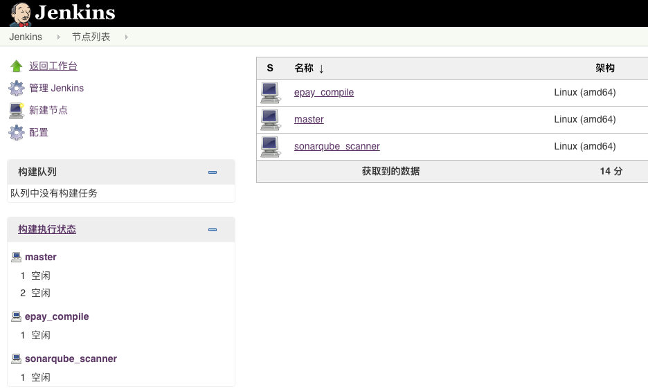
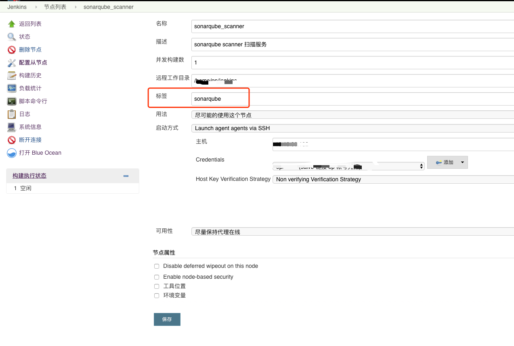

jenkins 声明式pipeline调用远程Docker执行任务
调用远程服务器执行任务的好处
- 一些 CPU 密集计算型任务，比如编译，静态扫描等等，放在单独的服务器上执行，不会对 Jenkins 所在服务器造成性能负担。
- 通过配置多台同样标签的子节点服务器，可以将多个任务分配到这些子节点上并行处理。
将任务执行环境采用 docker 部署而不是直接安装的好处
Jenkins 配置任务在远程服务器 Docker 容器中执行
1. 配置 Jenkins 子节点
配置完后效果如下图，这里我配置了两台 Slave 节点：epay_compile 和 sonarqube_scanner。分别用来做编译和sonarqube 代码静态扫描

我们使用 sonarqube_scanner 这台服务器做演示，注意这台服务器的标签: sonarqube ,后续我们将使用这个标签。

2. 远程服务器上镜像构建
1 | FROM ubuntu:16.04 |
- 我们在ubuntu 16.04的基础上构建了一个安装好 cppcheck和sonarqube-scanner的镜像，以后只要启动这个镜像的容器，就可以使用 cppcheck和 sonarqube-scanner 这两个工具。
执行如下命令，构建镜像:
1 | docker build -t sonarqube-scanner:latest . |
- 经过上面的步骤后，我们在 sonarqube_scanner 这个子节点服务器上有了一个标签为 sonarqube-scanner 的 docker 镜像。
3. pipeline 配置
1 | stage('code quality check') { |
- 可以看到，要在 Jenkins Pipeline 中让任务在远程服务器上执行，关键是在任务中按照以下写法配置好 agent，其中
image是远程子节点服务器上的 docker image 名称，label是远程子节点服务器的标签。
1 | agent { |
- 更多有关 sonarqube for jenkins pipline 的使用配置，请参考: Using a Jenkins pipeline]